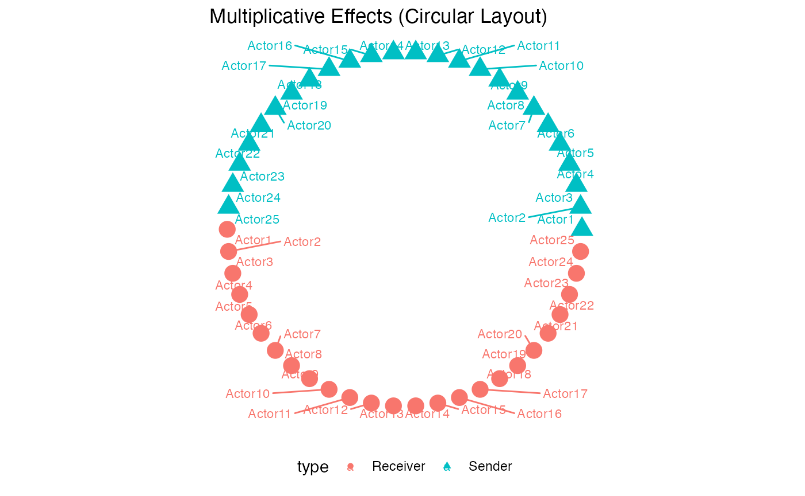

Dynamic Effects in Longitudinal AME Models
Cassy Dorff, Tosin Salau, Shahryar Minhas
2025-08-11
Source:vignettes/dynamic_effects.Rmd
dynamic_effects.RmdIntroduction
The lame package extends the Additive and Multiplicative
Effects (AME) model to longitudinal network data through the
introduction of dynamic effects. This vignette explains the theoretical
foundation, implementation details, and practical usage of the
dynamic_uv and dynamic_ab parameters.
Theoretical Background
Standard AME Model
The standard AME model decomposes network structure as:
where:
- : Fixed effects of covariates
- : Sender (row) effect for node
- : Receiver (column) effect for node
- : Multiplicative interaction between latent factors
- : Dyadic error term
Dynamic Extensions
For longitudinal data with networks observed at times , we extend the model to allow temporal evolution of effects.
Dynamic Multiplicative Effects (dynamic_uv = TRUE)
The latent factors evolve according to AR(1) processes:
where:
- controls temporal persistence
- index actors, indexes latent dimensions, indexes time
This specification allows actors’ positions in latent social space to drift over time, capturing:
- Evolving community structure
- Time-varying homophily patterns
- Dynamic clustering and transitivity
Prior Specifications
For Dynamic Parameters
The package uses the following default priors:
AR(1) coefficients:
Innovation variances:
These can be customized via the prior argument:
prior_custom <- list(
rho_uv_mean = 0.95, # Higher persistence for UV
rho_uv_sd = 0.05, # Tighter prior
sigma_uv_shape = 3, # Different variance prior
sigma_uv_scale = 2
)Implementation Details
Computational Efficiency
The dynamic effects are implemented in C++ via Rcpp and
RcppArmadillo:
- Block sampling: Updates are performed in blocks to improve mixing
- Sparse operations: Exploits temporal structure for efficiency
- Memory optimization: about a 50% reduction compared to R implementation
Algorithmic Details
The MCMC sampler alternates between:
- Forward filtering: Compute predictive distributions
- Backward sampling: Sample from smoothed distribution
- Parameter updates: Sample and given state sequences
This forward-filtering backward-sampling (FFBS) approach explores the posterior distribution.
Practical Usage
Basic Example
library(lame)
# Simulate longitudinal network data
set.seed(6886)
n <- 25 # actors (reduced for faster vignette building)
T <- 5 # time periods (reduced for faster vignette building)
# Generate networks (example with binary data)
Y_list <- list()
for(t in 1:T) {
Y_t <- matrix(rbinom(n*n, 1, 0.1), n, n)
diag(Y_t) <- NA
# Add actor labels (required for lame function)
rownames(Y_t) <- colnames(Y_t) <- paste0("Actor", 1:n)
Y_list[[t]] <- Y_t
}
# Fit model with dynamic effects (reduced iterations for vignette)
fit_dynamic <- lame(
Y = Y_list,
R = 2, # 2-dimensional latent space
dynamic_uv = TRUE, # Dynamic latent factors
dynamic_ab = TRUE, # Dynamic additive effects
family = "binary",
burn = 100, # Reduced for vignette (use 1000+ in practice)
nscan = 500, # Reduced for vignette (use 5000+ in practice)
odens = 25,
print = FALSE, # Suppress output for vignette
plot = FALSE # Suppress plots for vignette
)Visualization
Plotting functions can illustrate temporal dynamics:
# Plot latent positions (last time point)
uv_plot(fit_dynamic, plot_type = "snapshot")
#> ℹ Detected dynamic UV effects
#> • Using last time point for visualization
# Plot sender effects
ab_plot(fit_dynamic, effect = "sender")
# Plot trace of parameters
trace_plot(fit_dynamic)Model Selection
Choose between static and dynamic specifications based on:
- Model fit statistics: Compare GOF statistics
- Parameter estimates: Check if significantly differs from 0
- Visual inspection: Look for temporal patterns in residuals
# Static model
fit_static <- lame(Y_list, R = 2, family = "binary",
burn = 100, nscan = 400, odens = 20,
print = FALSE, plot = FALSE)
# Dynamic UV only
fit_uv <- lame(Y_list, R = 2, dynamic_uv = TRUE, family = "binary",
burn = 100, nscan = 400, odens = 20,
print = FALSE, plot = FALSE)
# Dynamic AB only
fit_ab <- lame(Y_list, R = 2, dynamic_ab = TRUE, family = "binary",
burn = 100, nscan = 400, odens = 20,
print = FALSE, plot = FALSE)
# Full dynamic
fit_full <- lame(Y_list, R = 2, dynamic_uv = TRUE, dynamic_ab = TRUE, family = "binary",
burn = 100, nscan = 400, odens = 20,
print = FALSE, plot = FALSE)
# Compare GOF statistics
if(!is.null(fit_static$GOF) && !is.null(fit_full$GOF)) {
cat("Static model GOF (sample):\n")
print(head(fit_static$GOF))
cat("\nDynamic model GOF (sample):\n")
print(head(fit_full$GOF))
}
#> Static model GOF (sample):
#> $sd.rowmean
#> obs 1 2 3 4 5
#> [1,] 0.04853168 0.06396433 0.05281431 0.07701761 0.05281431 0.05000000
#> [2,] 0.06918005 0.05600513 0.05641693 0.06804138 0.05469825 0.06328214
#> [3,] 0.05242941 0.05926830 0.05574620 0.06468406 0.05553819 0.06095308
#> [4,] 0.06596857 0.05000000 0.05170697 0.05626286 0.05858082 0.05443311
#> [5,] 0.06189522 0.05308754 0.05308754 0.04677072 0.04670881 0.05005784
#> 6 7 8 9 10 11
#> [1,] 0.05828371 0.06014065 0.05148265 0.06486275 0.05501473 0.04732424
#> [2,] 0.04888810 0.04614791 0.05931710 0.06095308 0.05114431 0.06004435
#> [3,] 0.05892557 0.05389891 0.05641693 0.06189522 0.06014065 0.06052433
#> [4,] 0.05574620 0.05892557 0.04336804 0.05379144 0.05980292 0.05882727
#> [5,] 0.05176290 0.04762897 0.05142641 0.05286907 0.05527708 0.04941791
#> 12 13 14 15 16 17
#> [1,] 0.06328214 0.05768489 0.05626286 0.06557262 0.05892557 0.05335937
#> [2,] 0.05707978 0.06812638 0.06535161 0.06014065 0.06897061 0.07445792
#> [3,] 0.06014065 0.04829261 0.05281431 0.07208855 0.07204840 0.07557649
#> [4,] 0.07308512 0.07694244 0.06071526 0.05379144 0.05379144 0.05176290
#> [5,] 0.05286907 0.05951190 0.05980292 0.07168604 0.06396433 0.05335937
#> 18 19 20
#> [1,] 0.05641693 0.06423517 0.05028852
#> [2,] 0.04187448 0.06250000 0.06400955
#> [3,] 0.06240734 0.07503857 0.05335937
#> [4,] 0.04551658 0.04959325 0.05501473
#> [5,] 0.04738534 0.06959705 0.05148265
#>
#> $sd.colmean
#> obs 1 2 3 4 5
#> [1,] 0.07244890 0.04039733 0.04383259 0.06250000 0.05000000 0.05142641
#> [2,] 0.05778512 0.04912428 0.05768489 0.06133167 0.04110736 0.05057539
#> [3,] 0.06696980 0.06047650 0.06419011 0.06355590 0.05808479 0.04110736
#> [4,] 0.05253967 0.04214997 0.05574620 0.06351035 0.04455282 0.04416143
#> [5,] 0.04577016 0.05170697 0.05443311 0.05259471 0.05114431 0.05005784
#> 6 7 8 9 10 11
#> [1,] 0.05828371 0.05641693 0.05422006 0.06142596 0.04947643 0.06640574
#> [2,] 0.05707978 0.04614791 0.05931710 0.05600513 0.04180532 0.05501473
#> [3,] 0.06250000 0.05522471 0.05641693 0.07557649 0.03803629 0.04859127
#> [4,] 0.07931273 0.04500514 0.04658475 0.05768489 0.05980292 0.05368374
#> [5,] 0.06644930 0.05469825 0.05926830 0.05682576 0.05120086 0.05877807
#> 12 13 14 15 16 17
#> [1,] 0.06328214 0.04959325 0.04941791 0.07769092 0.04166667 0.05335937
#> [2,] 0.05956050 0.04823265 0.05707978 0.06364688 0.05877807 0.05553819
#> [3,] 0.05768489 0.06028482 0.06396433 0.05758448 0.06684005 0.05308754
#> [4,] 0.06901255 0.05368374 0.05951190 0.04166667 0.05379144 0.04738534
#> [5,] 0.06838074 0.05951190 0.06666667 0.08464249 0.06833841 0.06662325
#> 18 19 20
#> [1,] 0.05641693 0.05034602 0.06419011
#> [2,] 0.04356774 0.05103104 0.05422006
#> [3,] 0.05882727 0.05501473 0.06980462
#> [4,] 0.05422006 0.06477347 0.04799209
#> [5,] 0.03901270 0.06305311 0.04859127
#>
#> $dyad.dep
#> obs 1 2 3 4
#> [1,] 0.015231092 -7.913669e-02 -0.030085023 -0.020850709 0.01896664
#> [2,] -0.014458955 1.524094e-01 0.015015015 0.019182652 0.01114425
#> [3,] 0.016534867 2.121849e-01 -0.007178828 -0.010668164 0.11006864
#> [4,] 0.142309681 -5.448155e-02 0.088855143 0.003728187 0.07834101
#> [5,] -0.007178828 -3.703841e-05 -0.007178828 -0.065719361 0.05437352
#> 5 6 7 8 9 10
#> [1,] 0.117069980 0.08885514 0.01501502 -0.055499983 0.02052239 0.03144301
#> [2,] 0.023199023 0.07310759 -0.02406554 0.145858182 0.05823262 0.04017551
#> [3,] 0.011144247 -0.01785714 -0.01467160 -0.003636364 0.17774732 0.12010114
#> [4,] 0.088855143 0.03567985 0.03571429 0.015015015 -0.03303303 -0.02406554
#> [5,] 0.007348698 -0.02709699 0.01114425 0.015231092 0.05351853 -0.06571936
#> 11 12 13 14 15
#> [1,] 0.044409052 0.01114425 -2.085071e-02 8.372966e-02 0.04231189
#> [2,] 0.048913043 0.02300530 -8.442164e-02 -7.719928e-02 0.25525526
#> [3,] 0.053518526 0.05921601 -8.112909e-03 1.896664e-02 -0.01066816
#> [4,] 0.003623188 -0.09489051 -5.277934e-02 -3.703841e-05 -0.03303303
#> [5,] 0.136087962 -0.01410783 -3.703841e-05 1.295443e-01 0.17072092
#> 16 17 18 19 20
#> [1,] 0.040000000 0.01114425 0.035714286 0.05011147 0.044409052
#> [2,] 0.078918512 0.15146080 -0.008112909 0.04000000 0.007348698
#> [3,] 0.078918512 0.03567985 -0.052779337 0.07355418 0.058232617
#> [4,] -0.003636364 0.07310759 -0.096892139 0.08363636 0.048913043
#> [5,] 0.117069980 0.10532099 0.207746479 0.08885514 0.027284330
#>
#> $cycle.dep
#> obs 1 2 3 4
#> [1,] 0.004697636 1.144382e-02 -0.0079786148 0.004915964 0.010546149
#> [2,] 0.022057807 -8.683577e-03 -0.0005191933 0.008225308 -0.003425739
#> [3,] 0.003409118 3.288189e-03 -0.0065989119 0.025987177 0.007601129
#> [4,] 0.012866730 -8.912113e-05 0.0054653473 0.003881961 -0.017290327
#> [5,] 0.006597912 -7.028462e-03 0.0116966851 0.007126572 -0.001178605
#> 5 6 7 8 9
#> [1,] 0.029315733 -0.0007815572 -0.006749513 -0.020865480 0.002005652
#> [2,] 0.008204561 0.0028610008 0.006078508 0.029813474 -0.001660334
#> [3,] 0.012539666 -0.0010349121 0.001180299 0.021302693 -0.008964122
#> [4,] -0.023833514 0.0297923303 -0.023389014 -0.017726743 -0.003189330
#> [5,] 0.011164385 -0.0106810214 0.015187774 0.003288189 0.012915648
#> 10 11 12 13 14
#> [1,] -0.0065999362 -0.012413117 0.011695342 -0.006591528 -0.002557819
#> [2,] -0.0007012322 0.022050600 0.011011487 -0.006349412 -0.005247364
#> [3,] -0.0095252034 0.003488636 -0.006591528 0.014812292 -0.002918988
#> [4,] 0.0413275900 -0.025299979 0.017483368 0.016704393 0.017325667
#> [5,] 0.0021152752 0.016813879 0.010384531 0.009565428 0.001770287
#> 15 16 17 18 19
#> [1,] 0.004189500 0.0050403692 0.0001434499 0.003622192 -0.017910564
#> [2,] 0.021435267 -0.0001564089 -0.0191891128 -0.015385317 -0.021492895
#> [3,] -0.009586006 -0.0225111836 -0.0144470232 -0.005301645 0.013263921
#> [4,] -0.001409239 -0.0069423953 -0.0079641927 0.008439313 -0.008654219
#> [5,] -0.004544087 -0.0050407668 -0.0175873613 -0.006963890 0.007840931
#> 20
#> [1,] 0.0280949785
#> [2,] -0.0287047961
#> [3,] 0.0081645311
#> [4,] 0.0155344652
#> [5,] -0.0004802247
#>
#> $trans.dep
#> obs 1 2 3 4
#> [1,] -0.0096317459 0.010138114 -0.008468256 0.0004533634 -0.004687137
#> [2,] 0.0001052847 -0.004871325 -0.001705921 0.0130890407 0.004249936
#> [3,] -0.0012054802 0.009160886 -0.006232333 0.0034401835 -0.012304411
#> [4,] 0.0003049938 0.004731639 0.001159969 0.0010984519 0.007601617
#> [5,] -0.0067322132 -0.019451883 0.005531502 -0.0189079387 -0.005279977
#> 5 6 7 8 9
#> [1,] -0.0059928472 -0.004946160 -0.0049694217 0.003700150 1.360445e-02
#> [2,] -0.0004305205 -0.004355795 -0.0058452551 0.001532438 -3.988622e-03
#> [3,] -0.0048841178 0.001759351 -0.0002670327 -0.010080738 -4.517969e-03
#> [4,] -0.0016379403 0.004065188 -0.0069339113 0.010556931 -9.320756e-03
#> [5,] -0.0002374555 -0.010695062 0.0081005671 -0.001684029 -1.389004e-05
#> 10 11 12 13 14
#> [1,] 0.006512806 -0.0012097487 -0.004244478 0.0090526438 -0.0009078874
#> [2,] -0.008468579 0.0146656472 0.010379666 0.0022022420 -0.0022707868
#> [3,] 0.002078155 0.0005698643 0.001631690 0.0051359016 0.0046432506
#> [4,] -0.006280429 0.0217609939 -0.003462399 0.0045870076 -0.0041542990
#> [5,] -0.013394646 0.0043193961 -0.012125176 0.0008725528 0.0116922510
#> 15 16 17 18 19
#> [1,] 0.009557011 0.002757938 0.0089960626 0.012315454 -0.008362392
#> [2,] -0.011001954 0.006934695 0.0083391526 0.005317659 -0.011221954
#> [3,] 0.006685912 -0.005901390 0.0060480445 -0.010105323 0.007248505
#> [4,] 0.009666885 -0.003518748 -0.0007333566 -0.003274170 0.002757938
#> [5,] -0.006056832 -0.003843866 -0.0187387127 0.010791311 0.018035409
#> 20
#> [1,] 1.734802e-03
#> [2,] 1.556117e-02
#> [3,] -1.192015e-02
#> [4,] -3.938641e-04
#> [5,] 7.856433e-05
#>
#>
#> Dynamic model GOF (sample):
#> $sd.rowmean
#> obs 1 2 3 4 5
#> [1,] 0.04853168 0.10535434 0.07248882 0.09507551 0.06640574 0.07216878
#> [2,] 0.06918005 0.10186343 0.07599647 0.07595838 0.05641693 0.06959705
#> [3,] 0.05242941 0.06918005 0.07701761 0.08946213 0.11250000 0.09880654
#> [4,] 0.06596857 0.08796174 0.08378351 0.06943055 0.05308754 0.07511565
#> [5,] 0.06189522 0.09568225 0.07671647 0.07967672 0.07614861 0.06623122
#> 6 7 8 9 10 11
#> [1,] 0.06259252 0.08157875 0.07115938 0.07363731 0.05975451 0.07607258
#> [2,] 0.05907270 0.06731456 0.07821060 0.07607258 0.08460830 0.09880654
#> [3,] 0.07216878 0.06147304 0.07308512 0.06123724 0.08783007 0.07228896
#> [4,] 0.07576768 0.09160351 0.06618751 0.05803495 0.08779711 0.07025911
#> [5,] 0.06623122 0.08025567 0.06752914 0.07618660 0.06909635 0.07308512
#> 12 13 14 15 16 17
#> [1,] 0.06530732 0.07128126 0.05753421 0.08157875 0.06463931 0.06004435
#> [2,] 0.09007456 0.07324332 0.05833333 0.05833333 0.07124066 0.06579288
#> [3,] 0.05522471 0.08115201 0.06259252 0.05828371 0.06423517 0.09182436
#> [4,] 0.05768489 0.07709272 0.08920300 0.05005784 0.09026709 0.09601432
#> [5,] 0.04811252 0.07843227 0.04608517 0.08733450 0.07607258 0.05902369
#> 18 19 20
#> [1,] 0.05902369 0.07978559 0.05379144
#> [2,] 0.07204840 0.07978559 0.05758448
#> [3,] 0.06282324 0.06984606 0.05803495
#> [4,] 0.07519265 0.05999614 0.06355590
#> [5,] 0.08057950 0.06305311 0.06147304
#>
#> $sd.colmean
#> obs 1 2 3 4 5
#> [1,] 0.07244890 0.05063257 0.07248882 0.08959141 0.07363731 0.07511565
#> [2,] 0.05778512 0.07087417 0.08913811 0.09307628 0.07013545 0.05828371
#> [3,] 0.06696980 0.07985809 0.07115938 0.08097353 0.05828371 0.05951190
#> [4,] 0.05253967 0.10518942 0.07168604 0.08007520 0.07363731 0.06909635
#> [5,] 0.04577016 0.07913011 0.07184732 0.08991380 0.07021791 0.05808479
#> 6 7 8 9 10 11
#> [1,] 0.05902369 0.06909635 0.10891936 0.07264832 0.07383352 0.09622504
#> [2,] 0.07426336 0.06052433 0.08357604 0.06696980 0.06748628 0.09583333
#> [3,] 0.08838835 0.06147304 0.08239050 0.05501473 0.07445792 0.07618660
#> [4,] 0.06552848 0.07013545 0.05926830 0.05926830 0.06833841 0.07228896
#> [5,] 0.06512986 0.06309898 0.07066975 0.06263873 0.07216878 0.05631426
#> 12 13 14 15 16 17
#> [1,] 0.06640574 0.06490734 0.05086065 0.08838835 0.08147227 0.07208855
#> [2,] 0.08596538 0.07422438 0.05314202 0.05707978 0.06142596 0.06123724
#> [3,] 0.06373774 0.06644930 0.06142596 0.05828371 0.06859199 0.08696929
#> [4,] 0.07013545 0.06812638 0.05768489 0.04859127 0.07046473 0.08733450
#> [5,] 0.05103104 0.08025567 0.06212853 0.09138213 0.10063456 0.05778512
#> 18 19 20
#> [1,] 0.07802540 0.05103104 0.07701761
#> [2,] 0.06118997 0.07013545 0.07308512
#> [3,] 0.06282324 0.06984606 0.05548607
#> [4,] 0.07519265 0.06351035 0.07787692
#> [5,] 0.07001157 0.07164567 0.08168509
#>
#> $dyad.dep
#> obs 1 2 3 4 5
#> [1,] 0.015231092 0.09114213 0.17929293 0.15628767 0.07512075 0.01600000
#> [2,] -0.014458955 0.27732611 0.07309537 0.00256914 0.03703704 -0.04819649
#> [3,] 0.016534867 0.04985974 0.16390634 0.22526695 0.01346213 0.03575733
#> [4,] 0.142309681 0.08331515 0.06770882 0.08635426 -0.02450783 -0.09973046
#> [5,] -0.007178828 0.28958827 0.05245511 -0.02436323 0.02052239 0.05351853
#> 6 7 8 9 10 11
#> [1,] -0.076675081 0.037037037 0.01653487 0.04429144 0.18599919 0.016534867
#> [2,] -0.007315026 0.027284330 -0.03168755 0.01653487 0.09602250 -0.084773001
#> [3,] -0.038461538 -0.046377583 0.23578800 0.01744171 -0.04166667 -0.007315026
#> [4,] 0.025533161 0.016534867 0.06656841 -0.06355042 -0.03168755 -0.046377583
#> [5,] -0.055499983 0.004865104 -0.06620142 0.06003370 0.15456506 -0.086956522
#> 12 13 14 15 16 17
#> [1,] -3.703841e-05 -0.04329056 0.07891851 -0.020952381 -0.02145046 -0.052779337
#> [2,] 4.985974e-02 -0.11317254 0.05011147 -0.027430455 0.05550373 -0.057833180
#> [3,] -3.680161e-03 0.10437859 0.09048507 -0.088929220 -0.06620142 -0.009166597
#> [4,] -3.636364e-03 0.02052239 0.15456506 -0.038821130 0.02146465 -0.020717299
#> [5,] 1.501502e-02 0.01134051 0.01114425 0.008708801 0.02964960 -0.069518717
#> 18 19 20
#> [1,] -0.04944030 0.05921601 0.04000000
#> [2,] -0.02145046 0.02964960 -0.01066816
#> [3,] -0.06443953 -0.12570356 0.16612165
#> [4,] 0.02052239 0.04132335 0.01744171
#> [5,] -0.02145046 0.01346213 -0.01090716
#>
#> $cycle.dep
#> obs 1 2 3 4
#> [1,] 0.004697636 -0.001103624 0.005166549 -0.043316381 0.018152911
#> [2,] 0.022057807 0.008162098 -0.002012598 0.022176913 0.023291087
#> [3,] 0.003409118 -0.012458788 0.017083731 -0.007613892 0.013395423
#> [4,] 0.012866730 -0.009894645 0.014593610 -0.010875492 0.001318978
#> [5,] 0.006597912 -0.005309164 -0.013706567 0.003762132 0.004954498
#> 5 6 7 8 9
#> [1,] 0.023429739 0.0008855049 -0.0008031409 0.01845672 0.007296080
#> [2,] 0.021161920 -0.0037596776 -0.0228106981 0.02145241 -0.016333337
#> [3,] 0.019589614 -0.0157842088 -0.0205482958 -0.01682673 0.006492367
#> [4,] -0.021241868 0.0120933780 0.0071409237 -0.01524721 -0.003876502
#> [5,] -0.006814007 -0.0002113734 -0.0114875897 0.01688435 0.019873100
#> 10 11 12 13 14
#> [1,] 0.0108876044 -0.0203660950 -0.002717218 0.0097722915 0.020980010
#> [2,] -0.0001741058 -0.0076395268 0.012085242 0.0004795836 0.007465208
#> [3,] -0.0031747482 -0.0005560865 -0.012300390 -0.0113514425 -0.020405579
#> [4,] 0.0099316048 -0.0134350333 0.011887663 -0.0009431939 -0.023917329
#> [5,] -0.0003226875 -0.0044483480 0.002744308 0.0234218377 -0.014900875
#> 15 16 17 18 19
#> [1,] -0.003934121 -0.006617595 0.025143287 -0.0256152072 0.0334966624
#> [2,] 0.016110175 -0.016670374 0.016971878 -0.0064052204 -0.0222250628
#> [3,] -0.010477457 -0.019157848 -0.016255004 0.0004144152 0.0188460452
#> [4,] -0.015570323 -0.010252212 0.016390588 0.0302162810 0.0005143712
#> [5,] 0.006584058 0.015354836 0.004002596 -0.0176610786 -0.0024832008
#> 20
#> [1,] 0.027294075
#> [2,] 0.012874434
#> [3,] 0.004833667
#> [4,] -0.007174238
#> [5,] 0.025782001
#>
#> $trans.dep
#> obs 1 2 3 4
#> [1,] -0.0096317459 0.0001668722 -0.0006470824 0.013525596 0.003975326
#> [2,] 0.0001052847 0.0026044475 -0.0025086253 0.007485888 0.011511687
#> [3,] -0.0012054802 0.0024143456 0.0107763290 -0.007058557 -0.006976384
#> [4,] 0.0003049938 0.0058686861 -0.0060236255 0.004441567 0.005719648
#> [5,] -0.0067322132 -0.0037803306 -0.0196088427 0.011721019 0.009541593
#> 5 6 7 8 9
#> [1,] -0.0100856493 -0.009991440 0.0099054049 -0.002248781 0.0156454030
#> [2,] -0.0017038403 -0.007723588 -0.0006805453 -0.003481510 -0.0139257208
#> [3,] -0.0036448717 -0.005847518 -0.0062966800 -0.020854636 -0.0172129673
#> [4,] -0.0004855284 -0.012795181 -0.0098327727 -0.015091369 -0.0009401536
#> [5,] 0.0013088725 -0.010638587 0.0187370708 0.003809377 0.0118189302
#> 10 11 12 13 14
#> [1,] 0.015698579 -0.006000650 -0.006025437 0.0008534936 0.003430211
#> [2,] 0.007029371 -0.000697995 -0.007211753 0.0059005969 0.010332527
#> [3,] -0.015139033 -0.001256605 0.007629036 0.0280707121 -0.007561715
#> [4,] -0.002535357 0.011680930 0.006752193 -0.0213885276 0.011193745
#> [5,] 0.004492546 0.001922984 -0.002002603 -0.0169213390 0.002804351
#> 15 16 17 18 19
#> [1,] 0.007556011 0.0006975328 -0.002337213 0.010917721 -0.001752866
#> [2,] -0.008491422 -0.0055958179 -0.016657204 -0.009000911 0.004867422
#> [3,] 0.005899404 -0.0054807367 0.003341629 0.001260388 0.004941414
#> [4,] -0.001113087 -0.0169926541 0.014628287 -0.016080604 0.003836330
#> [5,] 0.006398971 0.0120046899 0.011383988 -0.007419899 -0.008528328
#> 20
#> [1,] 0.002757938
#> [2,] 0.013610132
#> [3,] -0.003218213
#> [4,] -0.002311782
#> [5,] -0.006409589References
Sewell, D. K., & Chen, Y. (2015). Latent space models for dynamic networks. Journal of the American Statistical Association, 110(512), 1646-1657.
Durante, D., & Dunson, D. B. (2014). Nonparametric Bayes dynamic modeling of relational data. Biometrika, 101(4), 883-898.